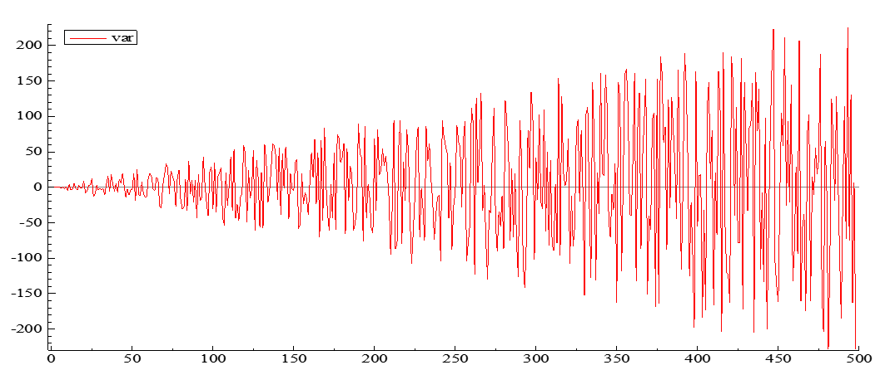
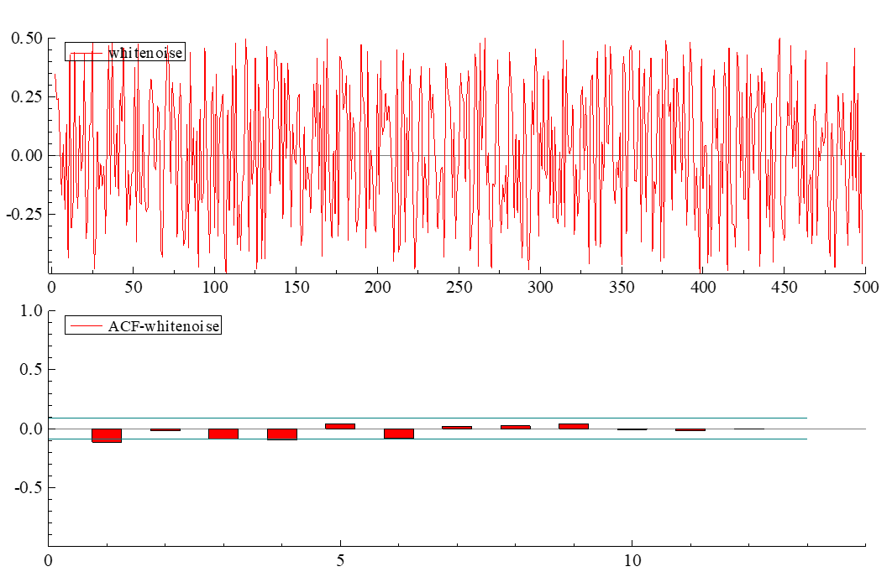
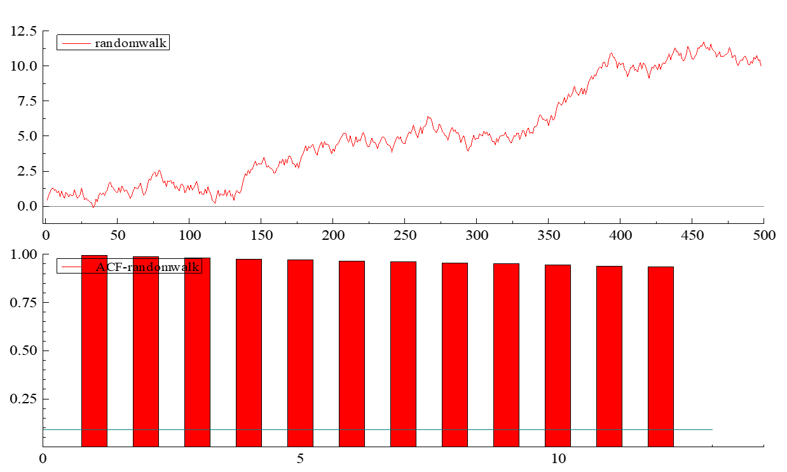
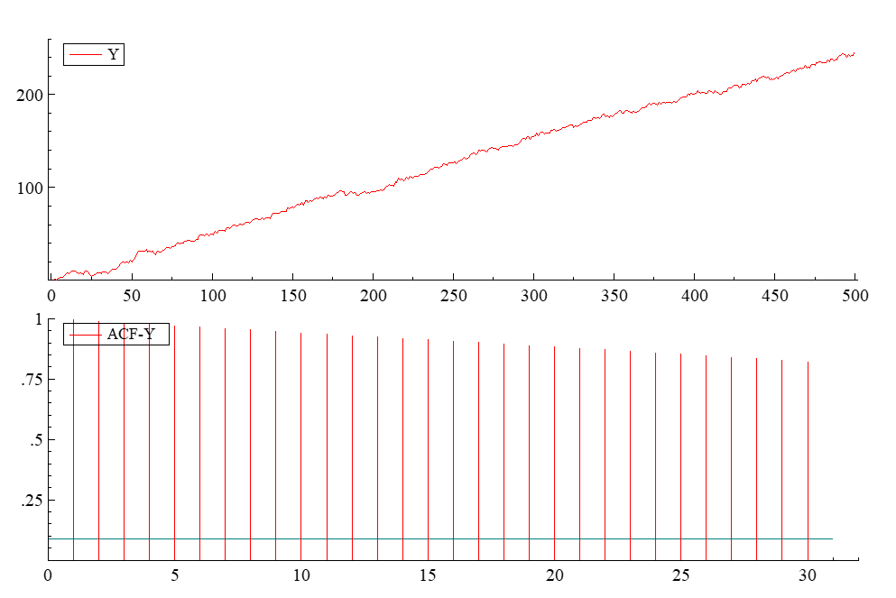
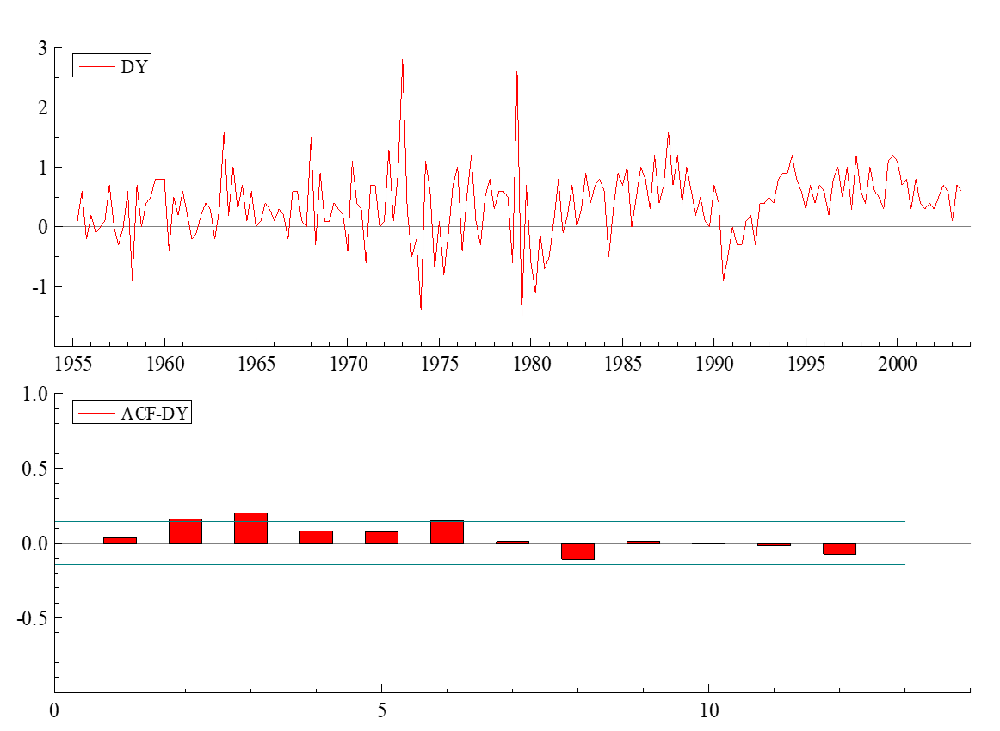
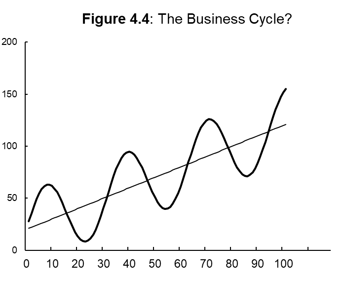
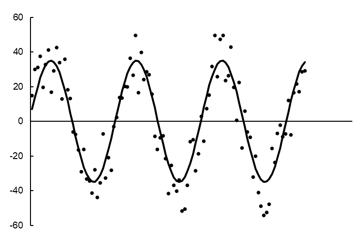
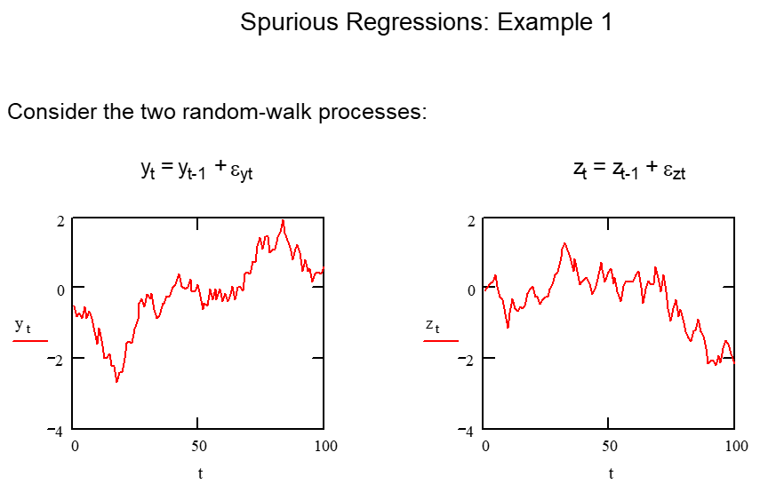
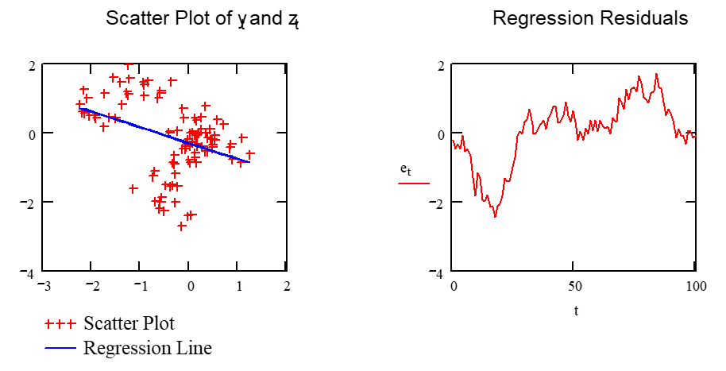

Unit Roots Tests: Methods and Problems
Economic Forecasting and Panel Data Analysis
Economic Forecasting — Unit Roots Test
Dr. Zahid Asghar
Professor of Economics
Unit Roots Tests
How do you find out if a series is stationary or not?
Order of integration of a Series
A series which is stationary after being differenced once is said to integrated of order 1 and is being denoted by I(1).In general a series which is stationary after being differenced \(d\) times is said to be integrated of order \(d\), denoted \(I(d)\). A series, which is stationary without differencing, is said to be \(I(0)\)
\(Y_t=b_0+Y_{t-1}+\epsilon_t\) –> \(I(1)\)
\(\Delta{Y_t}= Y_t-Y_{t-1}=b_0+\epsilon_t\) –> \(I(0)\)
Informal Procedures to indentify non-stationnary process
Eye ball the data


2. Diagnostic test - Correlogram
Correlation between 1980 and 1980+K.
For stationary process correlelogram dies out rapidly. Series has no memory. 1980 is not related to 1985.
For a random walk the correlogram does not die out. High autocorrelation for large values of k.
Statistical tests for sationarity: Simple t-test
Set up \(AR(1)\) process with drift (\(b_0\))
\(Y_t=b_0+b_1Y_{t-1}+\epsilon_t \\ \epsilon_t~iid(0,\sigma^2)\)
Simple approach is to estimate eq(1) using OLS and examine \(b_1\).
Use a t-test with null \(H_0: b_1=1\) (non-stationary)
against alternative \(H_a: b_1<1\) (stationary)
Test Statistics : TS=\((b_1-1)/SE(b_1)\) reject null hypothesis when test statistics is large negative 5% critical value is -1.65
Simple t-test based on AR(1) process with drift (\(b_0\))
\(Y_t=b_0+b_1Y_{t-1}+\epsilon_t \\ \epsilon_t~iid(0,\sigma^2)\) –> (1)
Problem with simple test approach 1. lagged dependent variables ==> \(b_1\) biased downwards in small samples (i-e dynamic bias) 2. When \(b_1=1\), we have non-stationary process and standard regression analysis is invalid (i-e non-standard distribution)
Dickey Fuller (DF) approach to non-stationary testing
Dickey and Fuller (1979) suggest we subtract \(Y_{t-1}\) from both sides of eq(1).
\(Y_t-Y_{t-1}=b_0+b_1Y_{t-1}-Y_{t-1}+\epsilon_t \\ \epsilon_t~iid(0,\sigma^2)\)
\[\Delta{Y_t}= b_0+\beta Y_{t-1}+\epsilon_t \\\beta=b_1-1\]
Use a t-test with: null \(H_0: \beta=0\) (non-stationary or Unit Root) against alternative \(H_0: \beta<0\)
- Large negative test statistics reject non-stationary
- This is know as unit root test since in eq(1) \(H_0: b_1=0\)
Variants of DF test
The different regression can be used to test the presence of a unit root
\(\Delta Y=\beta Y_{t-1}+\epsilon\)
\(\Delta Y=b_0+\beta Y_{t-1}+\epsilon\)
\(\Delta Y=b_0+\beta Y_{t-1}+b_2 t+\epsilon\)
- For testing if Y is a pure Random Walk
- For testing if Y is Random Walk with Drift
- For testing if Y is a Random walk with Drift and Deterministi Trend
The simplest model (appropriately only if you think there are no other terms present in the true regression model) \(\Delta Y=\beta Y_{t-1}+\epsilon\) Use the t-statistics and compare it with the table of critical values computed by the DF. If your t value is outside the confidence interval, the null of unit root is rejected.
\(\tau\) Statistics
A more general modeel (allowing for drift)
\(\Delta Y=b_0+\beta Y_{t-1}+\epsilon\)
\(\phi_1\) Statistics- Use F statistics if \(\beta=b_0=0\) using the non standard tables
\(\tau_{\mu}\) Statistics - use the t statistics to check if \(\beta=0\), against non-standard tables.
Examples
Sample size of n=25 at 5% level of signinficance for eq(2)
\(\tau\) - critical value=-3.00
t-test critical value=-1.65
\(\Delta p_t=-0.007-0.190p_{t-1} \\ (-1.05) (-1.49)\)
\(\beta=-0.0190\) \(\tau_{\mu}=-1.49>-3.00\)
hence cannot reject \(H_0\) and so unit root.
Incorporating time trends in DF test for unit root
Some time series clearly display an upward or downward trend (non-stationary mean). Should therefore incorporate trend in the regression used for the DF test.
\(\Delta Y=b_0+\beta Y_{t-1}+b_2 trend+\epsilon\) –>(4) It may be the case that \(Y_t\) will be stationary around a trend, although if a trend is not included series is non-stationary.
\(H_0=\beta=0 \\H_a:\beta<0\) \(\tau \\\Delta Y_t=b_0+\beta Y_{t-1}+b_2 trend+\epsilon\)
\(H_0=\beta=0 \\H_a:\beta<0\) \(\tau_{\mu} \\\Delta Y_t=b_0+\beta Y_{t-1}+\epsilon\)
\(H_0=\beta=0 \\H_a:\beta<0\) \(\tau_{\tau} \\\Delta Y_t=\beta Y_{t-1}+\epsilon\) Critical values from Fuller (1976)
Augmented Dickey Fuller (ADF) test for unit root
Dickey Fuller tests assume that the residuals \(\epsilon_t\) in the DF regression are non-autocorrelated.
Solution: incorporated lagged dependent variables
For quarterly data add up to four lags \[\Delta Y_t=b_0+\beta Y_{t-1}+\theta_1\Delta Y_{t-1}+\theta_2\Delta Y_{t-2}+\theta_3\Delta Y_{t-3}+\theta_4\Delta Y_{t-4}+\epsilon\]
Problem arises of differentiating between models.
Use a general to specific approach to eliminate insiginficant variables Check final parsimonious model for autocorrelation.
Check F-test for significant variables
Use Information Criteria
Trade-off parsimony vs. residual variance
Conside the following series and its correlogram
The variable Y is clealry trended and question is whether trend : Deterministic or Stochastic
Choose between alternative models - The model-progress results
\[\Delta Y_t=b_0+\beta Y_{t-1}+\theta_1\Delta Y_{t-1}+\theta_2\Delta Y_{t-2}+\theta_3\Delta Y_{t-3}+\theta_4\Delta Y_{t-4}+\epsilon\] \[\Delta Y_t=b_0+\beta Y_{t-1}+\theta_1\Delta Y_{t-1}+\theta_2\Delta Y_{t-2}+\theta_3\Delta Y_{t-3}+\epsilon\]
\[\Delta Y_t=b_0+\beta Y_{t-1}+\theta_1\Delta Y_{t-1}+\theta_2\Delta Y_{t-2}+\epsilon\]
\[\Delta Y_t=b_0+\beta Y_{t-1}+\theta_1\Delta Y_{t-1}+\epsilon\]
\[\Delta Y_t=b_0+\beta Y_{t-1}+\epsilon\]
AIC, SBC, HQC or some other criteria maybe used beside having judgement for appropriate lag selection.
Alternative statistical test for stationarity
One further approach is the Sargan and Bhargave (1983) test which uses the Durbin-Watson statistics.
If \(Y_t\) is regressed on a constant alone, we then examine the residuals for serial correlation.
Serial correlation in the residuals (long memory) will fail the DW test in a low value for this test.
This test has not proven so popular.
Three main aspects of Unit root testing
Determining components (constant , time trend).
ADF test- lag length , use F-test or Schwarz Information Criteria
In what sequence should we test?
Phi and tau tests
Three Strategy for Unit Roots
Formal Strategy 1. Use informal tests- eye ball data and correlogram 2. Incorporate Time trend if data is upwards trending 3. Specification of ADF test - how many lags should we incorporate to avoid serial correlation?
Example - Real GDP (2000 Prices) Seasonally Adjusted
- Plot Time Series- Non-Stationary (i-e. time varying mean and correlogram non-zero)
Unit Root Testing
1) Plot first difference of time series- Stationary


:::
:::
| Rho1 | Rho2 | r(1) | r(2) | d(1) | d(2) | |
|---|---|---|---|---|---|---|
| Real GNP | 0.95 | 0.90 | 34 | 0.04 | 0.87 | 0.66 |
| Nominal GNP | 0.95 | 0.89 | 0.44 | 0.08 | 0.93 | 0.79 |
| Industrial Production | 0.97 | 0.94 | 0.03 | -0.11 | 0.84 | 0.67 |
| Unemployment Rate | 0.75 | 0.47 | 0.09 | -0.29 | 0.75 | 0.46 |
Unit Roots and Regression Residuals
\(y_t=b_0+b_1 Z_t+\epsilon_t\)
Assumptions of the classical model:
both the \(y_t\) and \(z_t\) sequences be stationary
the errors have a zero mean and a finite variance.
In the presence of nonstationary variables, there might be what Grander and Newbold(1974) call a spurious regression
A spurious regression has a high \(R^2\) and \(t-statistics\) that appear to be significant, but the results are without any economic meaning.
The regression output “looks good” because the least squares estimates are not consistent and the customary tests of statistical inference do not hold.
Four cases
- CASE 1 : Both {yt} and {zt} are stationary.
- the classical regression model is appropriate.
- CASE 2 : The {yt} and {zt} sequences are integrated of different orders.
- Regression equations using such variables are meaningless
- CASE 3 : The nonstationary {yt} and {zt} sequences are integrated of the same order and the residual sequence contains a stochastic trend.
This is the case in which the regression is spurious.
In this case, it is often recommended that the regression equation be estimated in first differences.
- CASE 4: The nonstationary {yt} and {zt} sequences are integrated of the same order and the residual sequence is stationary.
- In this circumstance, {yt} and {zt} are cointegrated.
Spurious regression: example 1


Quarterly Real U.S. GDP
The t-statistic on the coefficient for lrgdpt–1 is -2.59. Table indicates that with 244 usable observations, the 10% and 5% critical value of \(\tau_{\tau}\) are about -3.13 and -3.43, respectively. As such, we cannot reject the null hypothesis of a unit root.
The sample value of \(\phi_3\) for the null hypothesis b2 = \(\beta\) = 0 is 4.12. As Table B indicates that the 10% critical value is 5.39, we cannot reject the joint hypothesis of a unit root and no deterministic time trend. The sample value of \(\phi_2\) is 20.20. As such, the growth rate of the real GDP series acts as a random walk plus drift plus the irregular term \(0.3426\Delta lrgdp_{t–1}\).
Real Exchange Rate Estimation
General to Specific or Specific to General Techinque
Multiple Roots
\(\Delta^2 y_t=b_0+\beta_1 \Delta y_{t-1}+\epsilon_t\)
If \(\beta_1\) does differ from zero, estimate
\(\Delta^2 y_t=b_0+\beta_1 \Delta y_{t-1}+\beta_2 y_{t-1} +\epsilon_t\)
If you reject the null hypothesis \(\beta_2\)=0, conclude \(y_t\) is stationary.
Seasonal Unit Roots (will skip)
Panel Unit Root Tests
\(\Delta y_{it}=b_{io}+\gamma_i y_{it-1}+\sum_{i=1}^n p_i \Delta y_{it-j}+\epsilon_{it}\) > One way to obtain a more powerful test is to pool the estimates from a number separate series and then test the pooled value. The theory underlying the test is very simple: if you have n independent and unbiased estimates of a parameter, the mean of the estimates is also unbiased. More importantly, so long as the estimates are independent, the central limit theory suggests that the sample mean will be normally distributed around the true mean.
The difficult issue is to correct for cross equation correlation- Because the lag lengths can differ across equations, you should perform separate lag length tests for each equation. Moreover, you may choose to exclude the deterministic time trend. However, if the trend is included in one equation, it should be included in all
Limitations
The null hypothesis for the IPSE test \(\gamma_1=\gamma_2=...=\gamma_1=0\). Reject of the null hypothesis means that at least one of the \(\gamma_i's\) differs from zero.
At this point, there is substantial disagreement about the asymptotic theory underlying the test. Sample size can approach infinity by increasing n for a given T, increasing T for a given n, or by simultaneously increasing n and T.
For small T and large n, the critical values are dependent on the magnitudes of the various \(\beta_{ij}\). The test requires that that the error terms be serially uncorrelated and contemporaneously uncorrelated. You can determine the values of \(p_i\) to ensure that the autocorrelations of \(\epsilon_{it}\) are zero. Nevertheless, the errors may be contemporaneously correlated in that \(E(\epsilon_{it}\epsilon_{jt})\neq 0\) The example above illustrates a common technique to correct for correlation across equations. As in the example, you can subtract a common time effect from each observation. However, there is no assurance that this correction will completely eliminate the correlation. Moreover, it is quite possible that is nonstationary. Subtracting a nonstationary component from each sequence is clearly at odds with the notion that the variables are stationary.